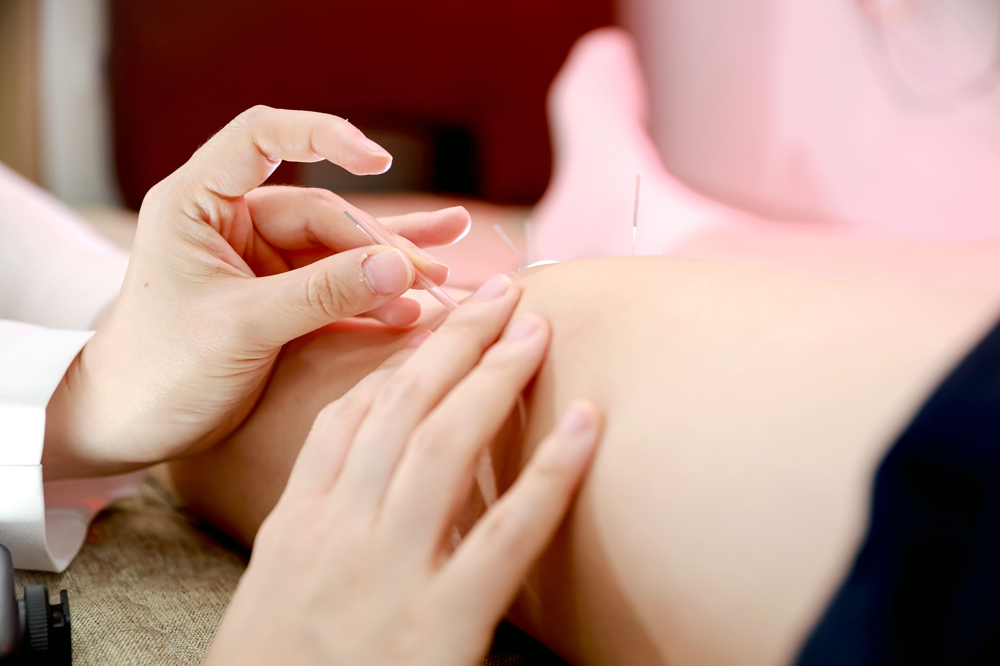

단순히 통증만을 줄이는 치료를 넘어
몸의 균형과 통증의 원인을 함께 살펴 맞춤 치료를 진행합니다.

통증은 단순히 아픈 부위만의 문제가 아니라 잘못된 자세와 생활습관, 근육과 관절의 불균형 등 다양한 원인에 의해 나타날 수 있습니다.
통증이 발생한 부위와 몸 전체의 상태를 함께 살펴보고, 개인의 증상과 체질에 맞는 치료 방법을 선택하여 보다 편안한 일상으로 회복할 수 있도록 돕습니다.
틀어진 척추와 관절을 밀고 당겨 정상적인 움직임과 균형을 회복하도록 돕습니다.
경혈을 자극하여 긴장된 근육을 이완시키고 통증과 불편감을 완화하는 데 도움을 줍니다.
개인의 체질과 건강 상태를 고려하여 통증과 전반적인 몸 상태에 맞는 처방을 진행합니다.
긴장된 근육과 조직을 이완시켜 통증과 피로를 줄이고 편안한 움직임을 돕습니다.